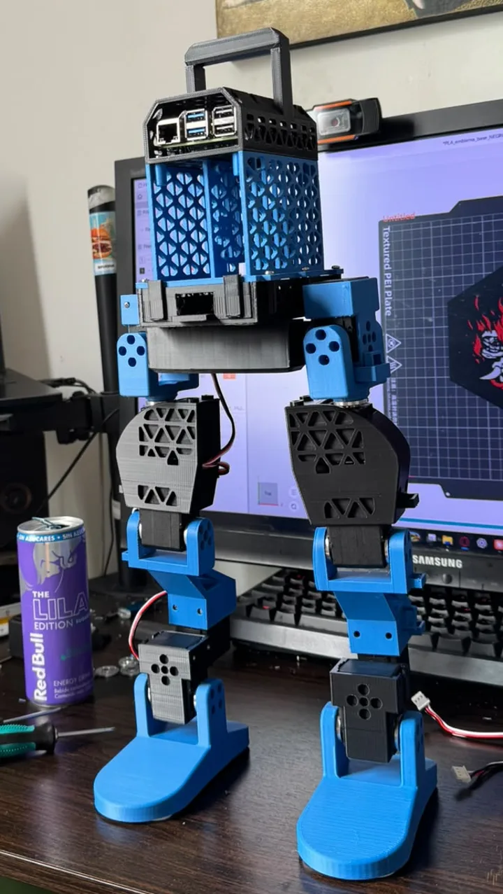
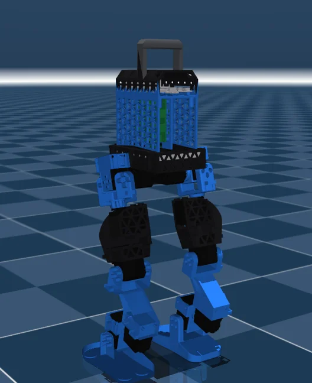
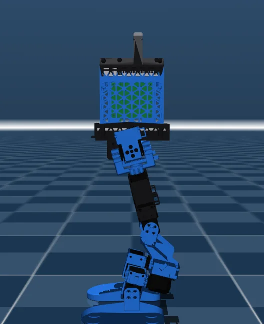
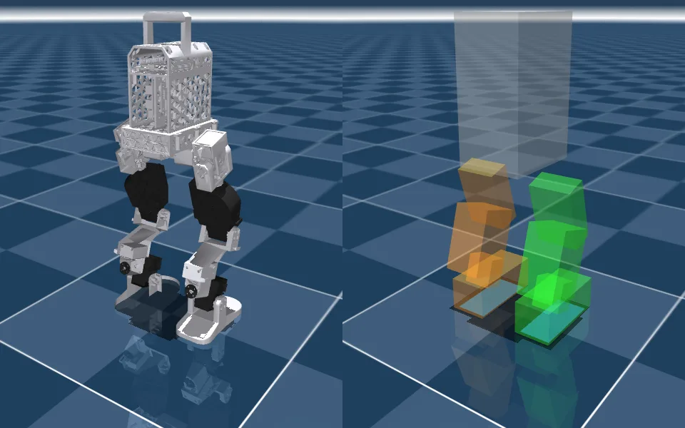
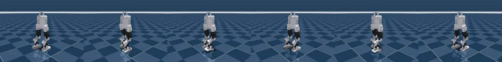
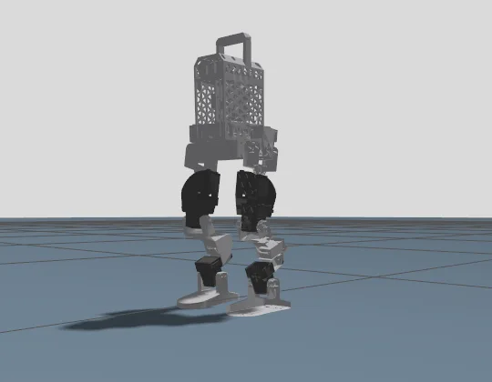
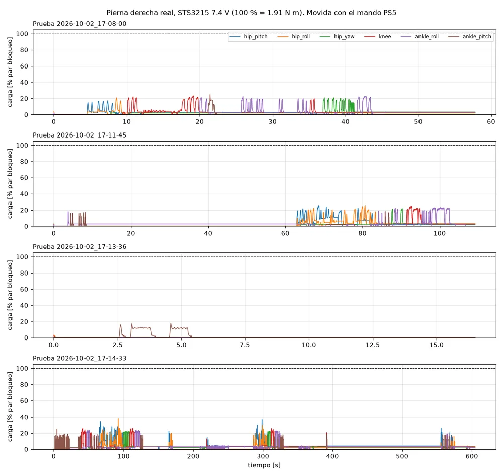

Bipedo: 12-DOF Bipedal Robot, from CAD to Reinforcement Learning
A 3D-printed, 46 cm biped with twelve Feetech STS3215 servos and a Raspberry Pi 5. I designed it in Inventor, generate its MuJoCo model straight from the CAD, and trained a walking policy with mjlab that also walks in Gazebo. The right leg is built and tested on hardware.
Code and docs on GitHub → bipedo

01Goal
Build a small, low-cost biped that I understand end to end, from each printed part to the walking controller, and use it to learn the full legged-robot workflow: CAD → simulation model → RL training → sim-to-sim check → hardware.
02Specs
| Degrees of freedom | 12 — per leg: hip pitch, roll and yaw · knee · ankle roll and pitch |
|---|---|
| Actuators | Feetech STS3215 serial-bus servos (simulation model: 12 V version; real right leg: 7.4 V, 19.5 kg·cm) |
| Control | Raspberry Pi 5 → Feetech URT-2 → servo bus; IMU in the torso |
| Mass | 1.568 kg |
| Height | ≈0.46 m (torso at 0.262 m when standing) |
| Structure | FDM-printed PLA, TPU heel pads |
03Mechanical design
All parts were modeled in Autodesk Inventor around a common servo interface, so every leg segment bolts to the same pattern. The torso was redesigned (v2) to be symmetric and to carry the battery, electronics and a handle close to the hip axis.
| Torso | v1 | v2 |
|---|---|---|
| Mass (with hip servos and electronics) | 782 g | 642 g |
| CoM height above hip axis | 79 mm | 38 mm |
| Pitch inertia about hip axis | 0.0078 kg·m² | 0.0024 kg·m² |
04From CAD to simulation
A Python generator (gen_mjcf.py) reads the Inventor export (one STL per part plus their positions) and builds the MuJoCo model part by part, using masses weighed on a scale, joint ranges measured on the robot and the real axis of every servo. Physics uses simple boxes; the soles are the envelope of the four TPU heel pads.



The servo model was identified from 97 public test runs of the STS3215 12 V (BAM model m1): kp = 33.9 N·m/rad, kd = 1.07 N·m·s/rad, armature 0.029 kg·m², friction 0.217 N·m, torque limit 2.94 N·m at stall falling to 0 at 4.72 rad/s.
05Walking policy (MuJoCo / mjlab)
Velocity-tracking task on flat ground, trained with 4096 parallel environments on an RTX 4060: 6000 iterations in 2 h 29 min. The policy maps 47 observations to 12 joint targets at 50 Hz and does not fall under any of the tested commands.

| Command | Actual / commanded speed |
|---|---|
| Forward 0.35 m/s | 86.9 % |
| Forward 0.20 m/s | 90.5 % |
| Backward 0.20 m/s | 81.5 % |
| Sideways 0.15 m/s | 63.9 % |
| Turn 0.8 rad/s | 99.6 % |
06Sim-to-sim: Gazebo Harmonic
The same policy.onnx runs inside Gazebo Harmonic through a C++ gz-sim plugin, with the SDF generated from the MuJoCo model. Servo armature turned out to be essential (without it the policy falls even in MuJoCo); SDF has no armature, so each joint gets a rotor coupled with a 1:100 mimic, which requires the bullet-featherstone engine. It walks without falling on every command, but tracks worse than in MuJoCo (forward 0.35 m/s: 49 % vs 88 %); time step, friction smoothing and foot slip are already ruled out.

07Real right leg
The right leg is assembled with six 7.4 V servos and driven with a PS5 controller. A logging tool shows, per servo, angle, load (% of stall torque), torque, current, temperature and voltage, and saves every session to CSV.

In those sessions no servo went above 38 % of its stall torque, which matches the model (moving the leg in the air needs at most ≈0.39 N·m). That is not enough to walk: in simulation, walking at 0.35 m/s asks for 2.3–2.4 N·m peaks at hip, knee and ankle, above the 1.91 N·m of the 7.4 V servo for about 7 % of the time.
08Next steps
- Identify the 7.4 V servo and retrain the policy with it (the current one assumes the 12 V version).
- Close the MuJoCo–Gazebo tracking gap.
- Assemble the left leg and deploy the policy on the Raspberry Pi 5.